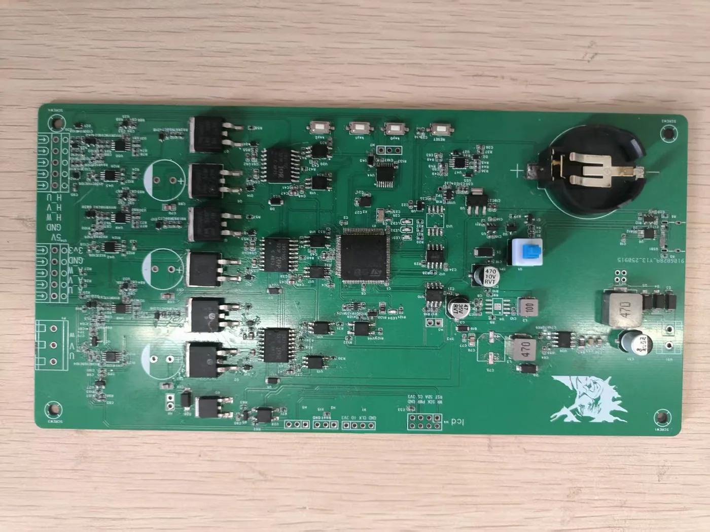

无刷电机驱动板
一块从零画到转起来的 BLDC 驱动板。


③ 相电流 + PWM 波形
问题
市售驱动板参数封闭，大部分出了问题只能换板子，不知道是哪里故障，学不到东西。我想知道从母线到相电流的每一级到底发生了什么，所以决定自己设计一块。
方案
- 主控 STM32G474VET6；功率级用 6 颗 IRFS3607 组成三相 H 桥，IR2101 半桥驱动加 TLP2355 光耦隔离，栅极电阻 22Ω。
- 相电流用 20mΩ 采样电阻 + 两级运放放大，1.25V 偏置做双向采样；LMV393 比较器负责硬件过流与过零检测。
- 板载霍尔接口、NTC 测温、制动电路；CAN（TJA1051）与 USB Type-C（CH340X 自动下载）通信，外挂 AT24C02 与 W25Q128 存储。
结果
- 完成原理图 → PCB → 打样 → 焊接 → 上电调试全流程，项目作为校级大创结项。
- 用示波器逐项核对供电轨与 PWM 波形，用相电流波形确认换相时序正确。
- 在调试中定位并解决了上电与采样环节的硬件问题。
- 硬件规格：6 路 MOSFET 三相桥、20mΩ 采样、1.25V 偏置双向电流采样、硬件过流与过零双保护。
最难的一步
功率回路一开关，采样通道里就全是毛刺，波形根本读不出来。最后靠分区布局把功率回路和信号回路隔开，才把相电流波形做干净。